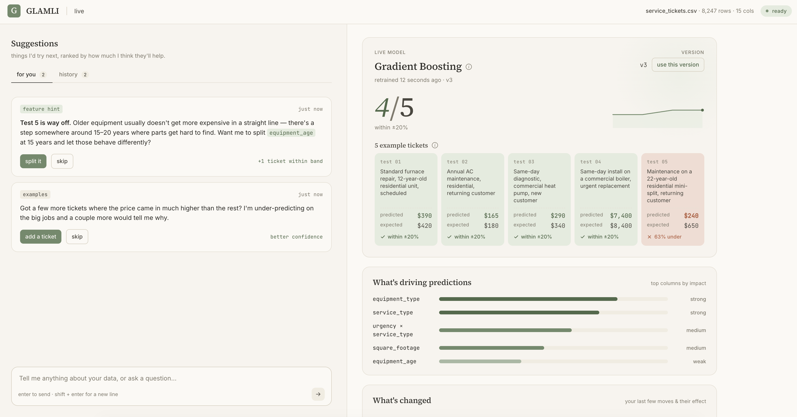

Ademar Tutor · Hamilton, New Zealand
AI engineer & researcher working on multi-agent orchestration for data operations.
Currently completing a Master's in AI at the University of Waikato. Working on my dissertation: a multi-agent orchestrated AutoML system that lets businesses use ML for decisions without a data team, plus the UX study to find out where that actually works.

On the backend, I set up a multi-agent system that runs a full AutoML pipeline from start to finish. For the research side, I ran a within-subjects UX study focused on usability, understanding, and trust. Most AutoML papers skip this part, but I wanted to see how real people actually use these tools.
-
GLAMLI (Dissertation)
A multi-agent LLM-augmented system for end-to-end AutoML. Built in FastAPI, Langchain, Python, NextJS/React and deployed in a Waikato user study with non-experts. Architecture: a planner-reviser loop, typed tool registry, sandboxed code execution, and structured observability traces feeding the HCI analysis.
-
Adematic
Independent AI engineering for SEO/MarTech clients including Visibility Labs and 180 Marketing: multi-LLM orchestration (Anthropic, OpenAI, Google, Perplexity), agentic pipelines, async batch processing. Shipped multiple internal AI production systems.
15 years building software systems across NZ, AU, UK, Singapore, and the US.
Engineering leadership through funding rounds, scaling, and acquisition. The orchestration argument behind the dissertation comes from that work.
-
Bootyard — Engineering Lead
Led a 30-person engineering team at Bootyard, a SaaS consultancy. Two defining client engagements: HURR (architected the multi-tenant SaaS that powered white-label rental for Selfridges, Matches, John Lewis, and Flannels), and LeagueSide as early engineering hire (acquired by TeamSnap in 2022).
-
Codetoki — Engineering Lead
Built in-browser compilers for automated coding assessment. Backed by the JFDI Asia Accelerator; recognised by Microsoft, ADB, and the World Economic Forum.